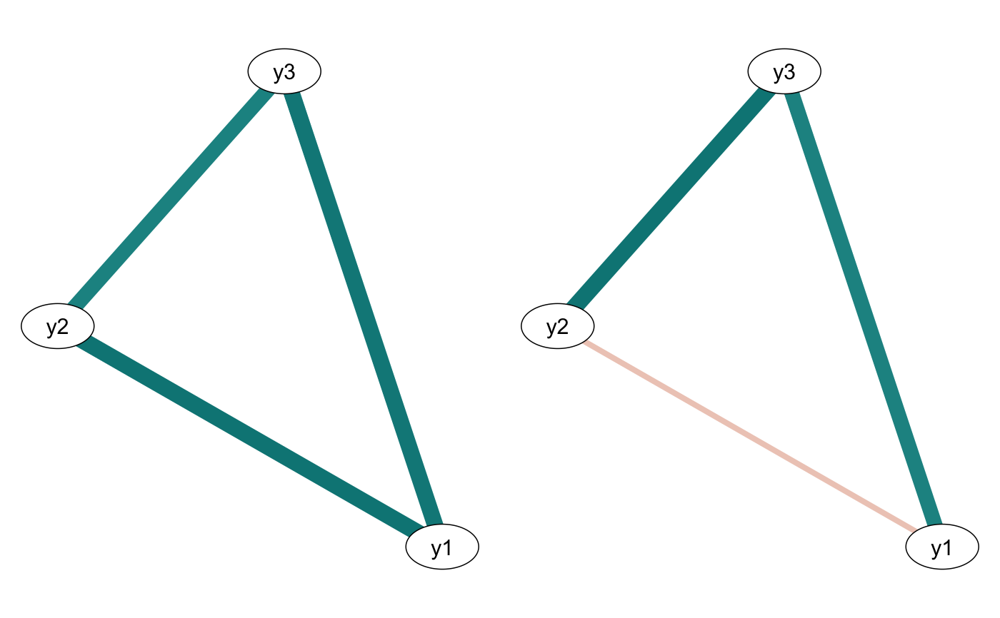

Quickly compares two partitions of a networktree object
comparetree(
tree,
id1 = 2L,
id2 = 3L,
transform = "detect",
highlights = 5,
plot = FALSE,
plot.type = c("compare", "subtract"),
layout = "constrained",
...
)| tree | a networktree object |
|---|---|
| id1 | the first partition |
| id2 | the second partition |
| transform | should stored correlation matrices be transformed to partial correlations or graphical lasso? Can be set to "cor", "pcor", or "glasso". Defaults to automatic detection |
| highlights | the number of comparisons to highlight |
| plot | plot a comparison of the two partitions? |
| plot.type | "compare" or "subtract". "compare" plots the two networks side by side. "subtract" subtracts network 2 from network 1, and plots a network where edge weights indicate the difference |
| layout | layout for the plots. The default "constrained" uses a FR layout from the full dataset |
| ... | additional arguments passed to qgraph |
set.seed(1)
d <- data.frame(trend = 1:200, foo = runif(200, -1, 1))
d <- cbind(d, rbind(
mvtnorm::rmvnorm(100, mean = c(0, 0, 0),
sigma = matrix(c(1, 0.5, 0.5, 0.5, 1, 0.5, 0.5, 0.5, 1), ncol = 3)),
mvtnorm::rmvnorm(100, mean = c(0, 0, 0),
sigma = matrix(c(1, 0, 0.5, 0, 1, 0.5, 0.5, 0.5, 1), ncol = 3))
))
colnames(d)[3:5] <- paste0("y", 1:3)
## Generate a networktree
tree1 <- networktree(nodevars=d[,3:5], splitvars=d[,1:2])
## Print out the structure
tree1
#> Network tree object
#>
#> Model formula:
#> y1 + y2 + y3 ~ trend + foo
#>
#> Fitted party:
#> [1] root
#> | [2] trend <= 104
#> | [3] trend > 104
#>
#> Number of inner nodes: 1
#> Number of terminal nodes: 2
#> Number of parameters per node: 3
#> Objective function: 791.619
## Compare any two partitions
comparetree(tree1, id1=2, id2=3, highlights=3)
#> $highlights
#> node1 node2 id1 id2 (id1 - id2)
#> 1 y1 y2 0.5192754 -0.1396285 0.658903871
#> 2 y1 y3 0.5060213 0.4191285 0.086892783
#> 3 y2 y3 0.4634213 0.4709230 -0.007501688
#>
#> $matrix
#> y1 y2 y3
#> y1 0.00000000 0.658903871 0.086892783
#> y2 0.65890387 0.000000000 -0.007501688
#> y3 0.08689278 -0.007501688 0.000000000
#>
#> attr(,"class")
#> [1] "comparetree"
## Add a comparison plot
comparetree(tree1, id1=2, id2=3, plot=TRUE)

#> $highlights
#> node1 node2 id1 id2 (id1 - id2)
#> 1 y1 y2 0.5192754 -0.1396285 0.658903871
#> 2 y1 y3 0.5060213 0.4191285 0.086892783
#> 3 y2 y3 0.4634213 0.4709230 -0.007501688
#> 4 y1 y1 0.0000000 0.0000000 0.000000000
#> 5 y2 y2 0.0000000 0.0000000 0.000000000
#>
#> $matrix
#> y1 y2 y3
#> y1 0.00000000 0.658903871 0.086892783
#> y2 0.65890387 0.000000000 -0.007501688
#> y3 0.08689278 -0.007501688 0.000000000
#>
#> attr(,"class")
#> [1] "comparetree"